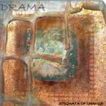

| Artist: | Drama |
| Title: | Stigmata Of Change |
| Label: | Cyclops CYCL148 |
| Length(s): | 65 minutes |
| Year(s) of release: | 2005 |
| Month of review: | [11/2005] |
| 1) | A Lust | 8.58 |
| 2) | An Errand | 6.02 |
| 3) | Stigmata Of Change 1 | 1.49 |
| 4) | A Start | 6.52 |
| 5) | Alice | 2.56 |
| 6) | A Misstep | 7.00 |
| 7) | A Shrine | 6.22 |
| 8) | A Revelation | 9.56 |
| 9) | An End | 5.08 |
| 10) | A Doubt | 0.58 |
| 11) | Stigmata Of Change 2 | 1.17 |
| 12) | Smoke | 6.47 |
An Errand brings in the vocals a lot faster, but the atmosphere is largely the same: laidback rhythm with melodic motifs laid across, as well on guitar as on vocals. This track has a somewhat more regular structure, lacking the time for lengthy explorations.
Stigmata of Change 1 is a short intermezzo on synth. Quite nice and warm. A Start opens with middle eastern sounding percussion. From this we move into a rather rocky section, almost stomp-rocky. in the break we switch to the sort of progressive section we might hear from the German neo-prog bands, completely washing the rocky opening away.
Alice starts as a semi classical keyboard piece, only to end in a bit of ambient experiment with a recorded message laid across, leading into A Misstep.
A Shrine starts with synths and rhythmic guitar, progressing into a somewhat flat vocal section. This bare section makes it clear that Lucas' vocals are decent enough, but are just on the thin side as far as inflection goes to really carry such a section: when the guitar blends in the added strength easily takes the sound to another level. The same effect is reached by the whistling synths blended in during the second part of this track.
A Revelation opens with a lengthy section dominated by lingering guitar and female chanting. This leads into a section that is somewhat jazzy in its structure and experiment, but due to the use of mainly electronic instruments it does not sound jazzy. From this we move into a guitar section dominated by guitar alternating with synth, of a highly melodic, poppy type.
An End opens with traditional flute and warm synths, a bit like Mostly Autumn. Even though this likeness deminishes, the track does have a build up that differs slightly from the others, thus giving it a different feel. A Doubt is a short piano vocal piece, leading into the synth driven female narrative of Stigmata 2.
Closer Smoke continues the more poppy melodic feel of An End, being a nice closer in the process.